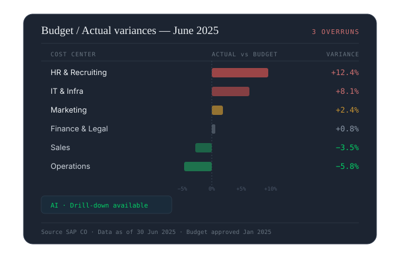

Reporting
The income statement at a glance.
Aggregate P&L, balance sheets and key indicators from your ERP and accounting sources. Compare actuals, budget and prior year without rebuilding a single table.
- Multi-entity consolidated P&L in plain language
- Automated actual / budget / prior-year comparison
- Narrative export ready for the Executive Committee
Budget steering
Spot the drifts before they cost you.
Visualize budget vs actual variances by cost center, BU or analytical line. The AI flags anomalies and suggests explanations.
- Cost-center variances detected automatically
- Alerts on budget overruns
- Drill-down to the individual accounting entry

Cash management
Anticipate liquidity pressure 12 months out.
Cross-reference inflows, outflows and payment schedules to generate a rolling forecast. Identify the at-risk months before they arrive.
- Rolling 12-month cash flow forecast
- Early detection of liquidity pressure
- What-if scenarios in plain language